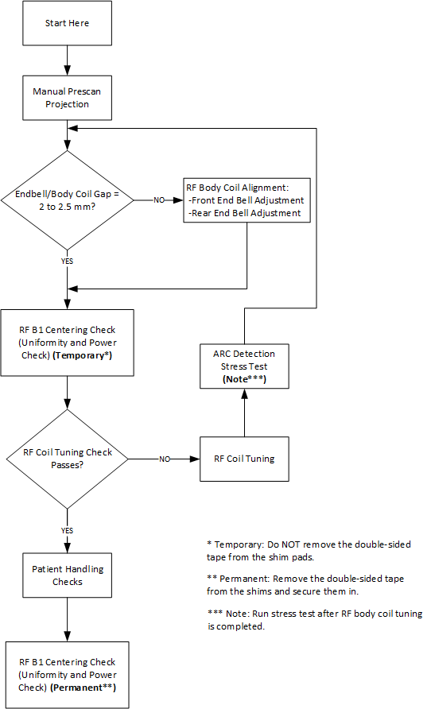

- 00000018WIA302AAE20GYZ
- id_131059283.37
- Sep 30, 2025, 9:50:44 PM
RF body coil replacement
Removal and installation instructions for replacing the RF body coil in the magnet bore.
Prerequisites
| Personnel requirements | |||
|---|---|---|---|
| Required persons | Preliminary requirements | Procedure | Finalization |
| 2 minimum | - | 4 hours | 40 minutes |
| Tools and test equipment | |||
|---|---|---|---|
| Item | Quantity | Part number | Manufacturer |
| Small Carpenter's Level | 1 | - | - |
| Nonmagnetic Titanium Service Tool Kit, Large Set | 1 | 5112581 | - |
| Consumables | |||
|---|---|---|---|
| Item | Quantity | Part number | Manufacturer |
| Adhesive | 1 | 46-220312P1 | - |
| Permatex (1 oz tube) Antiseize Lubricant | 1 | 2119594 | - |
| Required conditions |
|---|
| Contact a trained, local body coil tuning expert before starting this procedure, because the coil will need to be tuned as part of the replacement finalization. If necessary, contact the Modality Operations Manager for a list of trained individuals. |
| Safety | ||||
|---|---|---|---|---|
|
Before working in any GE HealthCare MR suite or doing any GE HealthCare service procedure, you must:
If you have any safety concerns at any time, do not begin work or immediately stop work and move to a safe location. Immediately contact your supervisor or site safety officer for instructions on how to proceed. | ||||
| ||||
| ||||
About this task
Use this procedure to replace the RF body coil.
Removing the RF body coil
Procedure
Body coil alignment
About this task

Endbell to body coil gap check
Procedure
Front endbell gap adjustment
About this task
Procedure
Rear endbell adjustment
About this task
This procedure can be done without the complete removal of the rear endbell. However, the rear endbell may need to be loosened. If preferred, it can be removed. The steps below detail only the adjustment portion. To remove the rear endbell, see Rear endbell removal and installation.
Procedure
Manual prescan projection — image test
About this task
Procedure
RF body coil alignment — centering pads
About this task
| Centering pad part number | Mark on centering pad | Thickness with double-sided tape applied (mm) |
|---|---|---|
| 5498416 (default) | None | 5.46 |
| 5498416-2 | 2 | 5.71 |
| 5498416-3 | 3 | 5.97 |
| 5498416-4 | 4 | 6.22 |
| 5498416-5 | 5 | 6.48 |
| 5498416-6 | 6 | 6.73 |
| 5498416-7 | 7 | 6.98 |
| 5498416-8 | 8 | 7.24 |
| 5498416-9 | 9 | 7.49 |
Procedure
Finalization
About this task
Body coil tuning
- (For MR750 systems with dual drive RF amplifier) Run the calibration tool for the system Dual Drive Quadrature tool. If it passed, you do not need to check the body coil tuning.
- The field service Service Tuning Instructions, 5363230INS (DOC1548519), applies to MR750 (single and dual drive), MR450, MR450w, Signa Voyager, and Signa Artist systems and is available from the online documentation library.
- Body Coil Stress Test with Arc Detection is required when you tune the body coil in the field.